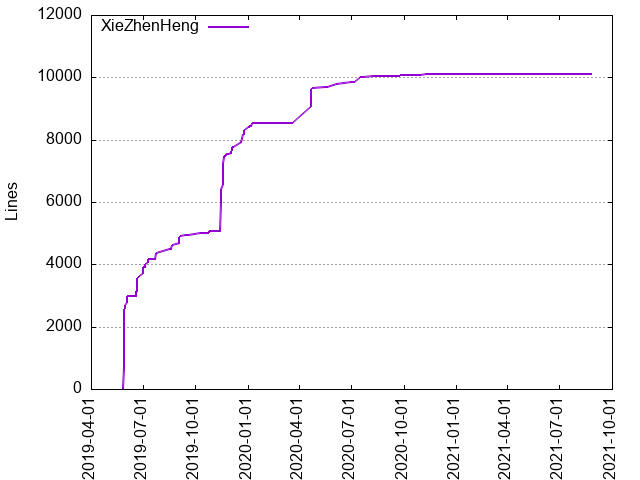
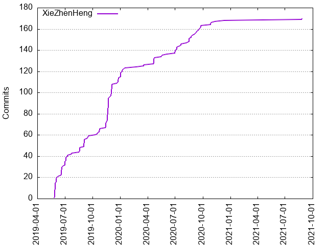

Authors
| Author | Commits (%) | + lines | - lines | First commit | Last commit | Age | Active days | # by commits |
|---|
| XieZhenHeng | 170 (100.00%) | 10116 | 3109 | 2019-05-27 | 2021-08-26 | 821 days, 22:02:13 | 88 | 1 |


| Month | Author | Commits (%) | Next top 5 | Number of authors |
|---|
| 2021-08 | XieZhenHeng | 2 (100.00% of 2) | | 1 |
| 2020-12 | XieZhenHeng | 1 (100.00% of 1) | | 1 |
| 2020-11 | XieZhenHeng | 1 (100.00% of 1) | | 1 |
| 2020-10 | XieZhenHeng | 3 (100.00% of 3) | | 1 |
| 2020-09 | XieZhenHeng | 9 (100.00% of 9) | | 1 |
| 2020-08 | XieZhenHeng | 8 (100.00% of 8) | | 1 |
| 2020-07 | XieZhenHeng | 8 (100.00% of 8) | | 1 |
| 2020-06 | XieZhenHeng | 3 (100.00% of 3) | | 1 |
| 2020-05 | XieZhenHeng | 2 (100.00% of 2) | | 1 |
| 2020-04 | XieZhenHeng | 7 (100.00% of 7) | | 1 |
| 2020-03 | XieZhenHeng | 2 (100.00% of 2) | | 1 |
| 2020-02 | XieZhenHeng | 1 (100.00% of 1) | | 1 |
| 2020-01 | XieZhenHeng | 9 (100.00% of 9) | | 1 |
| 2019-12 | XieZhenHeng | 18 (100.00% of 18) | | 1 |
| 2019-11 | XieZhenHeng | 30 (100.00% of 30) | | 1 |
| 2019-10 | XieZhenHeng | 7 (100.00% of 7) | | 1 |
| 2019-09 | XieZhenHeng | 11 (100.00% of 11) | | 1 |
| 2019-08 | XieZhenHeng | 5 (100.00% of 5) | | 1 |
| 2019-07 | XieZhenHeng | 12 (100.00% of 12) | | 1 |
| 2019-06 | XieZhenHeng | 16 (100.00% of 16) | | 1 |
| 2019-05 | XieZhenHeng | 15 (100.00% of 15) | | 1 |
| Year | Author | Commits (%) | Next top 5 | Number of authors |
|---|
| 2021 | XieZhenHeng | 2 (100.00% of 2) | | 1 |
| 2020 | XieZhenHeng | 54 (100.00% of 54) | | 1 |
| 2019 | XieZhenHeng | 114 (100.00% of 114) | | 1 |